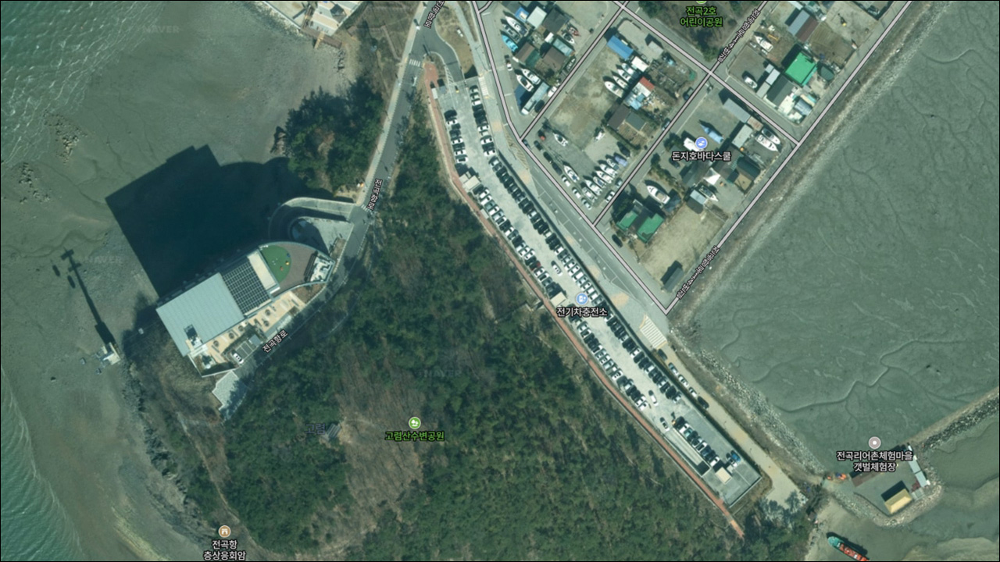
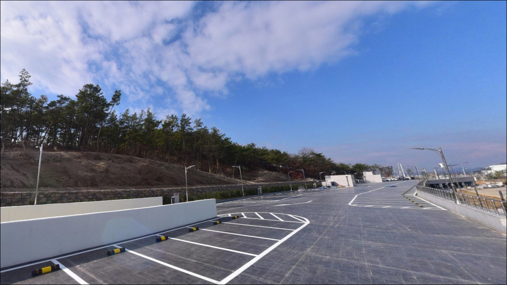
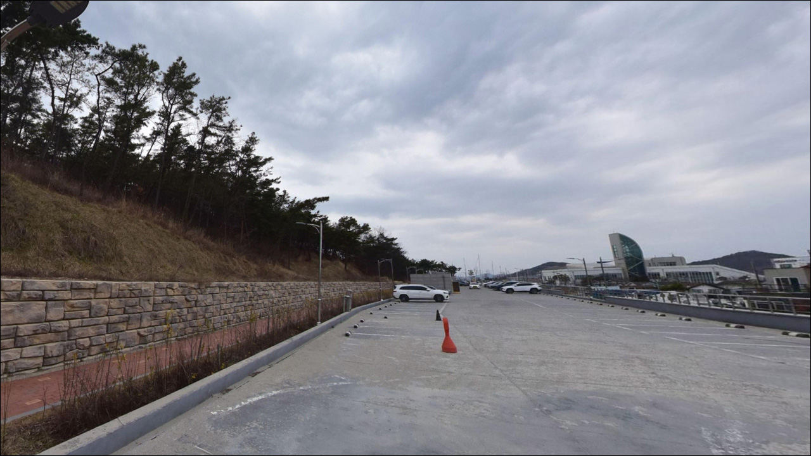
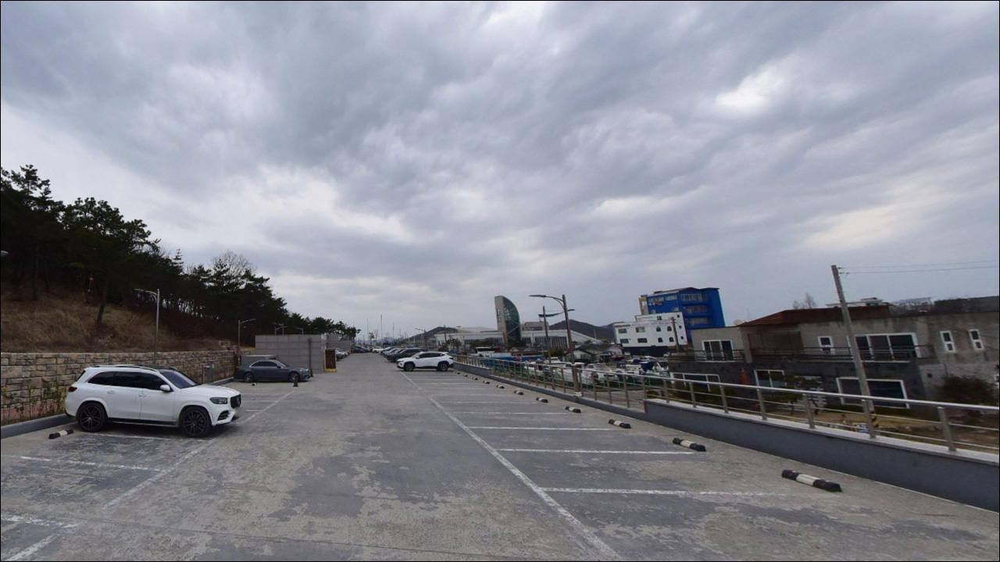
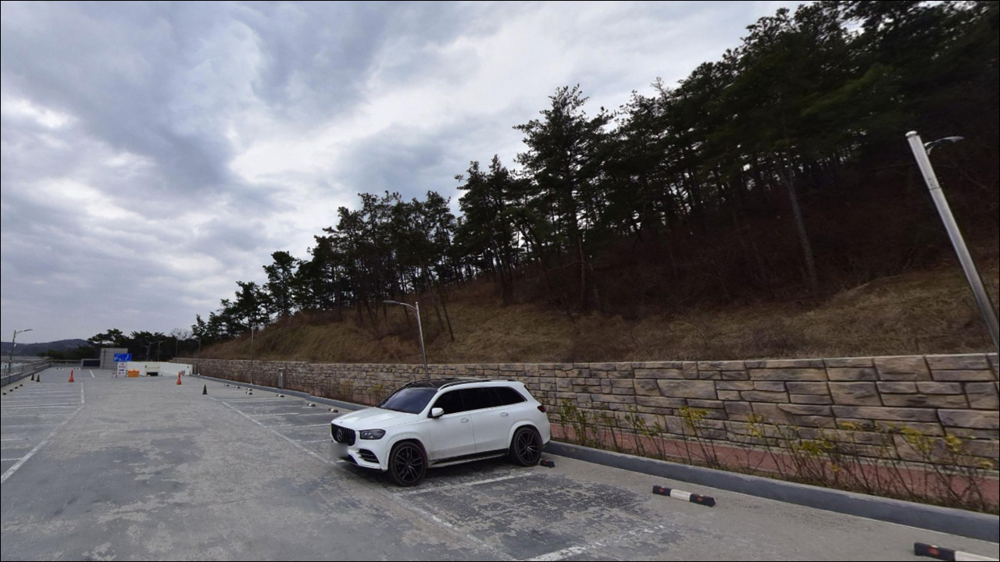
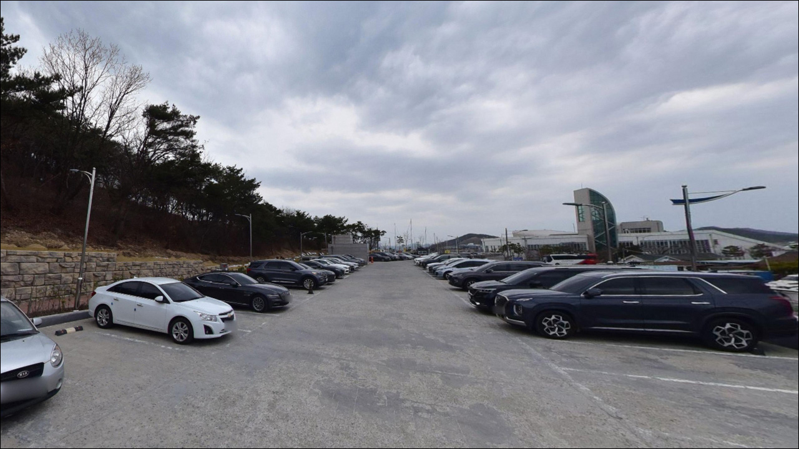
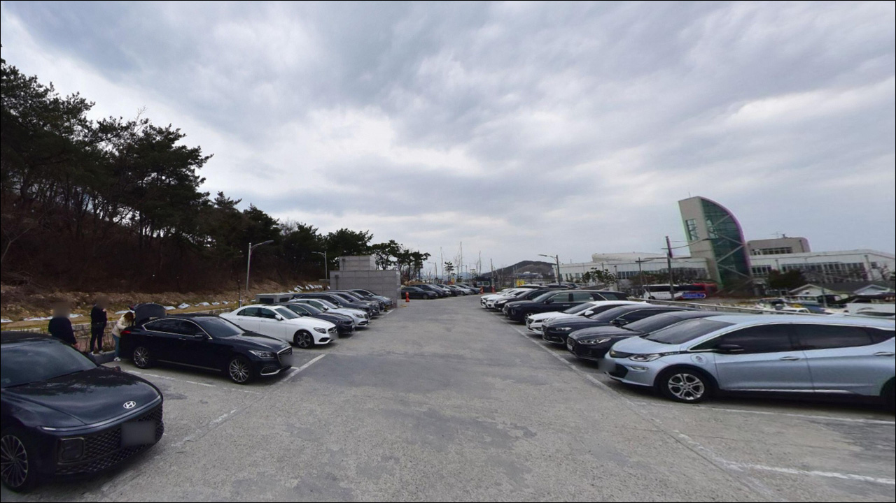
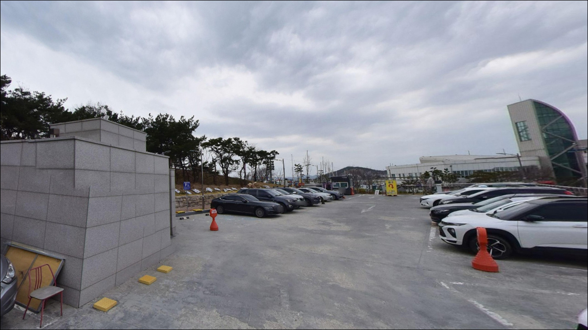
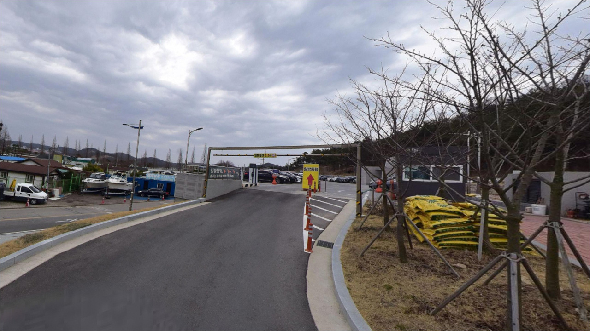

고렴산수변공원주차장 경기 화성시 바다와 가장 가까이 머무는 차박, 낚시 해안 명소
이 페이지에는 광고(제휴 링크 포함)가 있으며, 광고 링크를 통해 구매하면 운영자가 판매 수익 또는 수수료를 받을 수 있습니다. 포인트 사진: 카카오맵 스카이뷰·로드뷰. 이 페이지의 지도·사진 이미지는 카카오맵의 실제 서비스 이미지와 다를 수 있습니다.


포인트 안내
고렴산수변공원주차장
경기 화성시 만세구 서신면 장외리 661
갯벌 연안 포인트는 물때를 확인하지 않고 출발하는 것이
가장 흔한 실수입니다.
간조 시간대에 도착하면 발 앞에 광활한 갯벌만 드러날 뿐,
수심이 형성되지 않아 어떤 채비도
제 역할을 하지 못하게 됩니다.
고렴산수변공원은 경기 화성시 서신면,
전곡항 바로 인근에 위치한 서해 연안 수변공원입니다.
214면 규모의 공영주차장이 조성되어 있어
수도권 서해 포인트 중 접근성이 편리한 편이지만,
이 포인트에서 낚시 여건이 열리는 시간은
물때에 따라 달라지는 들물 기반 포인트입니다.
이 글은 고렴산수변공원의 진입 여건,
갯벌 지형 낚시 조건, 물때 판단 기준,
주변 대안 포인트에 집중합니다.
조황 단정이나 특정 어종 보장은
이 글의 범위에 포함되지 않습니다.

1. 진입 동선과 포인트 접근성
고렴산수변공원 주차장은 전곡항로 방면에서
포장도로로 연결되어 있습니다.
급경사나 비포장 구간 없이 일반 승용차부터
SUV와 캠핑 장비를 실은 차량까지
진입 자체에 어려움이 없는 수준입니다.
주차장 규모가 214면으로 넓고
공원 방문객 수요를 반영한 부지 구조이므로
회차 공간과 주차 동선 여유는 확보된 편입니다.
캠핑 차량이라면 공간 여유가 있는 구석 자리를
먼저 파악해 두는 편이 좋습니다.
전곡항·케이블카 정류장과 인접한 관광 지역 특성상
주말과 성수기 오전 이후에는
주차 공간이 줄어드는 경우가 있을 수 있습니다.
낚시 목적이라면 이른 시간 진입이 실질적으로 유리합니다.

2. 차박 환경 평가 및 야간 체류 여건
고렴산수변공원 주차장은 관광지 성격의 공영주차장입니다.
케이블카 정류장과 해상관찰로가 인접해 있어
야간에도 가로등 구간이 있는 편이며,
주말과 성수기에는 늦은 시간까지
방문객 차량 왕래가 이어질 수 있습니다.
이런 환경 조건상 완전히 고즈넉한
하룻밤 차박 베이스보다는
낚시 후 짧게 쉬는 단기 체류 용도에
더 어울리는 구조입니다.
취사나 야영과 관련된 사항은
공원 현장 게시판에서 반드시 확인하는 편이 좋습니다.
전곡항과 연결된 해안 산책로가
주차장 옆으로 이어지기 때문에,
낚시를 마치고 어스름한 시간대에
해안선을 걸으며 짧게 쉬기 좋은
부담 없는 출조 기점으로는 충분히 활용할 수 있습니다.


3. 주변 편의시설 및 인프라 현황
전곡항 인근 권역에는 수산물센터와
식당·카페가 입점해 있어
장외리 일대에서 먹거리 이용은
비교적 어렵지 않은 편입니다.
장외리 마을 방면에
편의점도 가까운 거리에 있는 편이라
기본 물품 보충은 현장 인근에서 가능합니다.
이 일대는 서해안 대표 관광 권역 중 하나로,
성수기 주말에는 식당·주차장 모두
대기가 생기는 경우가 많습니다.
낚시 채비, 얼음, 식수는
출발 전에 준비해 가는 편이
현장에서 시간을 절약하는 방법입니다.

4. 방문 전 준비사항 및 체크 포인트
고렴산수변공원 방문에서 가장 먼저 확인할 것은
물때입니다.
서해는 조석 간만의 차가 크기 때문에
간조 시간대에 도착하면 넓은 갯벌이 드러나
낚시 여건 자체가 형성되지 않습니다.
바다타임에서 전곡항 기준 물때를 확인하고
들물 시작 전후로 타이밍을 맞추는 것이
이 포인트를 제대로 활용하는 기본 전략입니다.
서해 갯벌 지형은 밀물 속도가 빠릅니다.
갯벌 쪽으로 무리하게 진입하면
고립 위험이 발생할 수 있으므로,
낚시 자리는 제방·호안·선착장 구조물 위에서 잡고
갯벌 직접 진입은 피하는 것이 원칙입니다.
야간 낚시가 목적이라면 헤드랜턴은 필수입니다.
갯벌 경계 구간은 바닥이 미끄러울 수 있으니
구명조끼와 미끄럼 방지 신발도
함께 준비해 가는 편이 좋습니다.

5. 갯벌 연안 포인트에서 낚시 자리가 살아나는 조건
고렴산수변공원 일대는 전형적인 서해 조간대 지형입니다.
전곡항과 맞닿은 이 해안선은
만조 시 수심 2~4m 내외가 형성될 것으로 추정되며,
들물 타이밍이 낚시 여건을 여는 핵심 변수입니다.
안고렴섬 앞 갯벌과 전곡항 방조제 구간이
해안선을 따라 연결되어 있어,
갯골(갯벌 내 수로) 방향으로
만조 전후 조류가 형성될 가능성이 있습니다.
조류가 살아있는 구간에서는
원투 채비를 던진 뒤
바닥 어종이 접근하는 타이밍을 기다리기에
알맞은 구조가 됩니다.
진입이 편리한 만큼 물때 계산 없이 찾아오는 경우가
적지 않은 편이어서,
사리 전후 만조 시간대를 미리 계산해 두고
출발 시각을 정하는 것이 중요합니다.
최신 조황은 가기 전에 꼭 검색해 보시기 바랍니다.


6. 이 포인트에 어울리는 낚시 스타일
만조 전후 이 포인트에서 기본이 되는 낚시 방식은
원투낚시입니다.
만조 시 갯골 방향으로 채비를 보내면
망둥어·숭어·붕장어를 노려볼 수 있는
지형 조건이 갖춰집니다.
루어낚시는 전곡항 방파제나 선착장 구조물 주변에서
시도해 볼 만합니다.
인공 구조물 주변은 우럭·숭어가
은신처로 활용하기 좋은 환경 조건인 경우가 많아,
가벼운 지그헤드 채비로
구조물 경계를 천천히 탐색하는 방식이 어울립니다.
민장대를 이용한 갯벌 생활낚시도 선택지입니다.
같은 서신면 해안선에 속하는 이 일대에서는
여름부터 초겨울 사이 망둥어가
활발하게 활동하는 경향이 있습니다.
가벼운 민장대 채비로
만조 전후 갯벌 경계에서
망둥어를 노리는 방식도
이 지형 조건에 잘 맞는 편입니다.

7. 대안 포인트와 플랜 B 동선
고렴산수변공원에서 물때가 맞지 않거나
낚시 여건이 여의치 않을 때
가장 가까운 대안은 전곡항입니다.
화성시 서신면에 자리한 지방어항으로
선상낚시 선단이 잘 갖춰져 있으며,
공원 주차장에서 도보로 이동할 수 있는
거리에 있습니다.
전곡항 방파제 직접 진입이 여의치 않을 때는
궁평항으로 이동하는 것이 두 번째 대안입니다.
국가어항으로 피싱존이 조성되어 있어
도보 낚시가 가능하며, 우럭·망둥어·숭어 등
서해 권역에서 기대해 볼 수 있는
다양한 어종을 노릴 수 있는 포인트입니다.
망둥어 낚시가 주목적이라면
같은 서신면 내 백미리 어촌체험마을도
함께 고려할 만합니다.
7월부터 11월 사이 망둥어 낚시체험을 운영하는 곳으로,
경기 연안에서 망둥어 조황이
안정적으로 확인된 포인트입니다.

물때를 맞추면
고렴산수변공원이 달라 보입니다
들물 타이밍을 잡고 서해 갯벌 낚시를 즐기거나,
전곡항을 기점으로 서신면 해안선의
여러 포인트를 묶어 돌아볼 계획이라면,
고렴산수변공원 주차장은 접근성 면에서
수도권 서해 포인트 중 상당히 편리한 기점이 됩니다.
고렴산수변공원은 낚시만을 위한 포인트는 아니지만,
물때를 맞추고 전곡항 인근 구조물을 함께 활용하면
서해 갯벌 낚시와 단기 차박 체류를
함께 소화하기에 충분한 조건을 갖춘 곳입니다.
반면 완전히 조용한 환경에서 하룻밤 차박을 원하거나,
물때 계산 없이 갯벌 낚시를 기대하는 분이라면
이 포인트보다 궁평항 방면이나
백미리 어촌체험마을 인근이
목적에 더 가까운 선택이 될 수 있습니다.
가을 망둥어 시즌이나 여름 들물 타이밍에
전곡항 인근 갯벌 낚시와 수변 산책을 묶어서 계획한다면,
고렴산수변공원은 차박 기점으로도
낚시 베이스로도 무리 없이 활용할 수 있는 곳입니다.